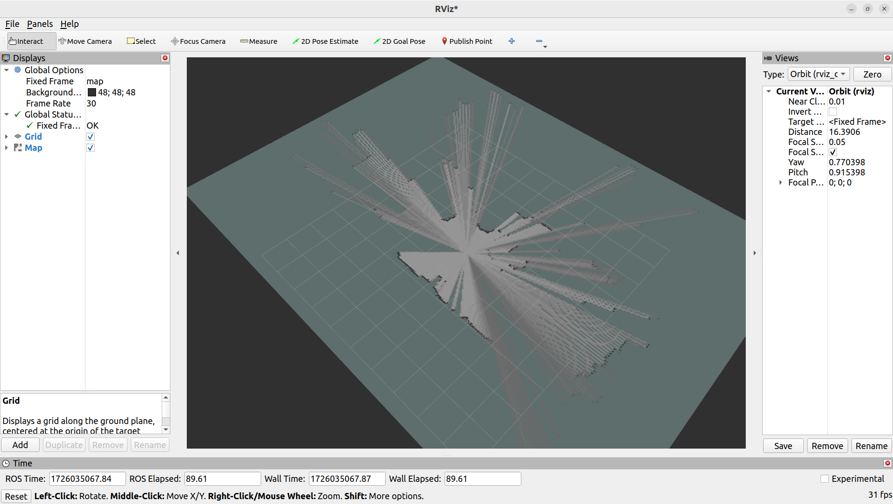
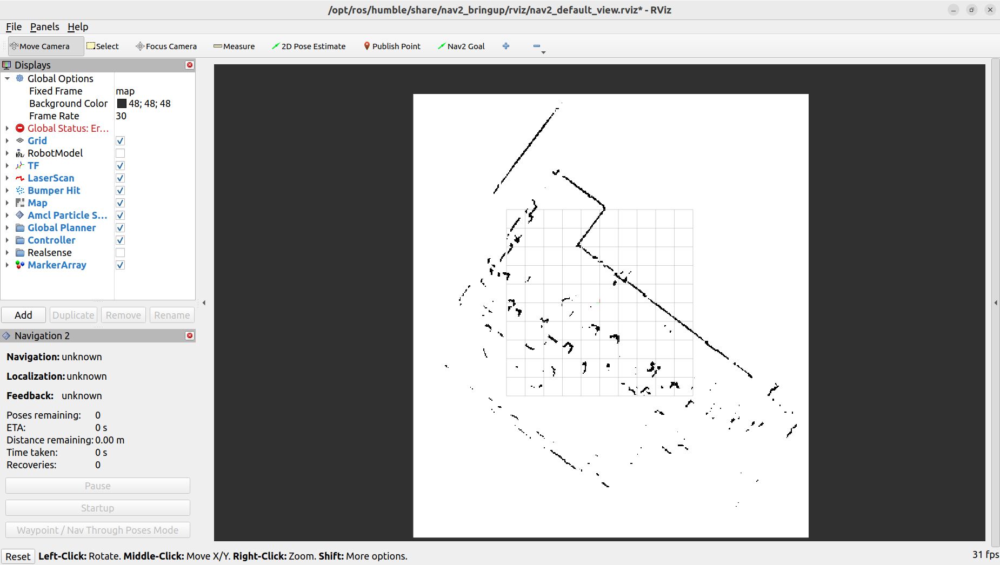
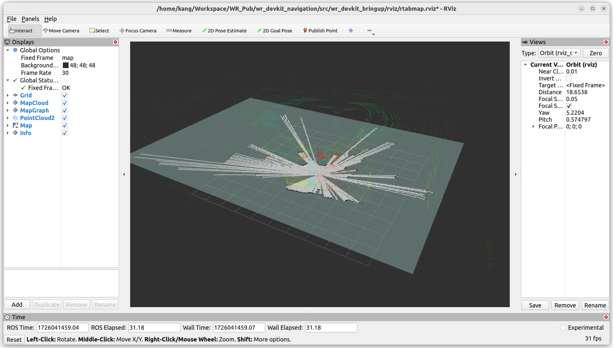
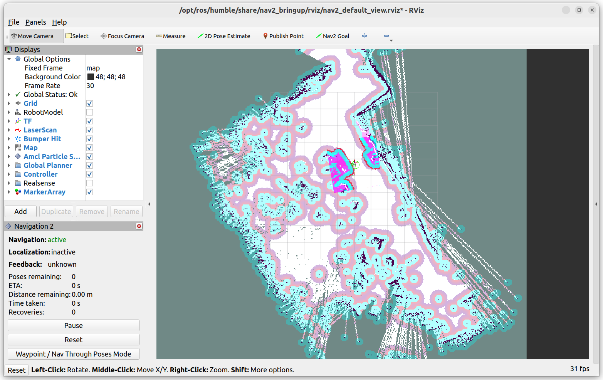
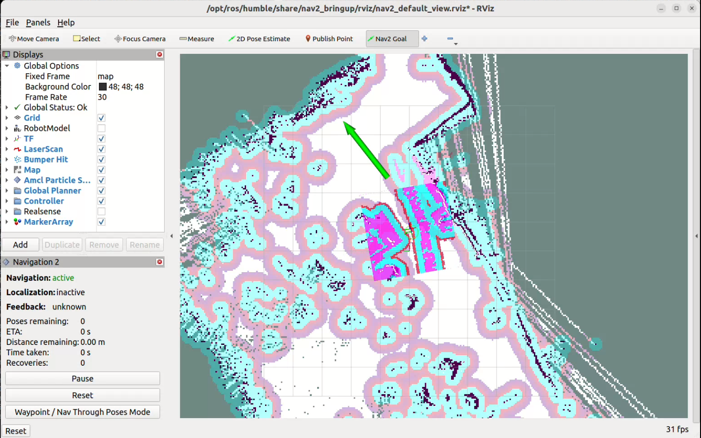

UGV Devkit - ROS2 Navigation Sample Setup
Revision History
Revision |
Date (DD/MM/YYYY) |
Author |
Changes |
|---|---|---|---|
1 |
04/09/2024 |
Kang Wei |
Initial release |
1. Overview
This guide provides step-by-step instructions for running mapping and navigation samples on the UGV development kit. The kit has been validated by Weston Robot for use with the Scout Mini and Ranger Mini V2 mobile robots. These samples serve as a starting point for developing mobile robots using ROS2.
Getting Started
Review the following guide and README files within the wr_devkit_navigation package to set up your UGV development kit:
Tutorials
2. Cartographer Mapping and Navigation
Cartographer is a system that provides real-time simultaneous localization and mapping (SLAM) in 2D and 3D across multiple platforms and sensor configurations. For autonomous navigation through complex environments, cartographer is integrated with Nav2 Navigation Stack by Open Navigation.
You can find more information on ROS2 Workshop and cartographer_ros GitHub repository.
Mapping
Bringup the robot base and sensors. Open a new terminal and enter the command:
ros2 launch wr_devkit_bringup wr_devkit_platform.launch.py robot_model:=<ROBOT_MODEL>
Base
<ROBOT_MODEL>
Ranger Mini 2.0 (default)
ranger_mini_v2
Scout Mini
scout_mini
Note
Ensure the argument
robot_modelmatches the robot model you are using. Adjust the launch file as necessary to align with your hardware and software setup
Launch Cartographer SLAM. In a new terminal, enter the command:
ros2 launch wr_devkit_bringup wr_devkit_cartographer.launch.py
Open RVIZ2 to view the mapping process:
rviz2Once RVIZ2 is open, you will see the default display. On the left panel, under the “Displays” section, click on the “Add” button. In the “By display type” tab, scroll down and select “Map” under the “rviz_default_plugins” category. Click “OK” to add the Map display. You should now see the map being visualized in RVIZ2 as the mapping process occurs.

Control the robot around the environement using the remote controller or teleoperation by running
ros2 run teleop_twist_keyboard teleop_twist_keyboard.py. The speed should be slow throughout the mapping process. If the speed is too fast, the map quality may be affected.After mapping completion, in a new terminal, navigate to the
mapsfolder then save the map usingmap_server.$ cd Workspace/wr_devkit_navigation/src/wr_devkit_bringup/maps $ ros2 run nav2_map_server map_saver_cli -f <YOUR_MAP_NAME>
{kind=link}
Navigation
Bringup the robot base and sensors. Open a new terminal and enter the command:
ros2 launch wr_devkit_bringup wr_devkit_platform.launch.py robot_model:=<ROBOT_MODEL>
Launch Nav2 in a new terminal:
ros2 launch wr_devkit_bringup wr_devkit_nav2.launch.py robot_param:=<ROBOT_PARAM> map:=<YOUR_MAP_YAML>
Base
<ROBOT_PARAM>
Ranger Mini 2.0 (default)
nav2_ranger_mini.param.yaml
Scout Mini
nav2_scout_mini.param.yaml
Ensure the
robot_paramargument matches the robot base you are using. Then, replace<YOUR_MAP_YAML>with the absolute path to the map YAML file you saved.
Launch RVIZ2 to visualize the navigation process. In a new terminal, enter the command:
ros2 launch nav2_bringup rviz_launch.py
The map to odom frame will not be published until you provide an initial pose estimate. Click on the
2D Pose Estimatebutton. Then, on the map, click on the location where the robot is located, and drag the arrow to the direction the robot is facing.
{kind=link}
Generally, the laser scan display does not overlap with the map. To correct this, use the
2D Pose Estimatetool to provide an estimated position for the robot. Repeat this process as necessary until the laser scan display aligns accurately with the map.
{kind=link}
{kind=link}
With an accurate estimation of the robot’s location, we can now set a navigation goal for the robot to move toward. Click on the
Nav2 Goalbutton, then click on the location on the map where you want the robot to move to, and drag the arrow to set the orientation. The robot should start moving towards the goal.
{kind=link}
3. RTAB-Map and Navigation
Note
RTAB-Map requires an RGB-D camera (e.g. Intel RealSense D435i) for operation. Ensure your camera is properly connected and configured before using RTAB-Map. In this sample mapping, one realsense camera is installed at the front position of the perception layer.
Review the Camera Configuration section in UGV Devkit Getting Started to configure your devkit to launch the camera(s).
Mapping
Bringup the robot base and camera(s). By default, all camera settings are set to ‘none’. Based on your setup, only pass in the cameras that are physically connected. Open a new terminal and enter the command:
ros2 launch wr_devkit_bringup wr_devkit_platform.launch.py robot_model:=<ROBOT_MODEL> <POSITION>_camera:=<CAMERA_TYPE>
<POSITION>
<CAMERA_TYPE>
front
realsense_d435i
rgb_camera
rear
left
right
Launch RTAB-Map in mapping mode. If you have a monitor connected to the robot PC, you can set argument
rvizto true to launch RVIZ. Alternatively, you can clone this repository to your computer and load the rviz configuration located atsrc/wr_devkit_bringup/rviz/rtabmap.rviz. In a new terminal, enter the command:ros2 launch wr_devkit_bringup wr_devkit_rtabmap.launch.py rviz:=<RVIZ_TRUE_FALSE>
<RVIZ_TRUE_FALSE>
Description
true
Launch RVIZ to visualize the mapping process and assess the quality of the map
false
RVIZ will not be launched, but it can be opened on another PC with the same ROS_DOMAIN_ID

After building the map, you can exit the program directly. The map will automatically save as
rtabmap.dbin the main directory under.ros.
{kind=link}
Navigation
Bringup the robot base and camera(s).
ros2 launch wr_devkit_bringup wr_devkit_platform.launch.py robot_model:=<ROBOT_MODEL> <POSITION>_camera:=<CAMERA_TYPE>
Launch RTAB-Map’s localization mode. In a new terminal, enter the command:
ros2 launch wr_devkit_bringup wr_devkit_rtabmap.launch.py localization:=true
Launch nav2
ros2 launch wr_devkit_bringup wr_devkit_nav2_rtab.launch.py robot_param:=nav2_scout_mini_rtab.param.yaml
Launch RVIZ to visualize the navigation process.
Assuming you have a monitor connected to the robot PC, open RVIZ and load the configuration file located at
src/wr_devkit_bringup/rviz/nav2_default_view.rviz.OR
If you are working on a different PC, you can launch RVIZ with the following command:
ros2 launch nav2_bringup rviz_launch.py

Note
During initialization, the robot may need to detect additional visual features before it can accurately localize itself. To facilitate this, drive the robot around until it appears correctly positioned in RVIZ.
To set a navigation goal, click on the
Nav2 Goalbutton, then click on the location on the map where you want the robot to move to, and drag the arrow to set the orientation. The robot should start moving towards the goal.
{kind=link}
{kind=link}